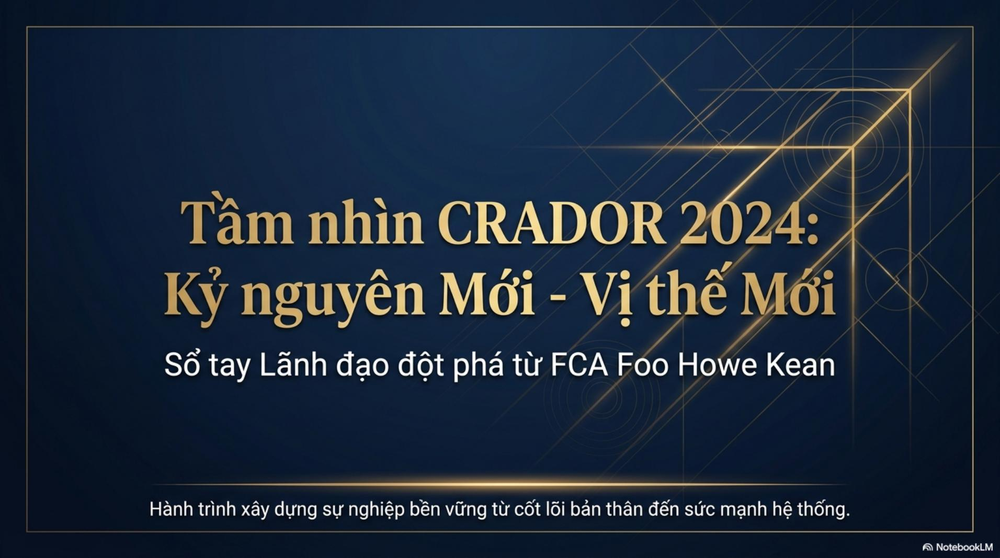

Nguyên tắc tấm gương
Tự bồi dưỡng bản thân trước khi bồi dưỡng người khác; niềm tin và khí chất tạo nên sức mạnh dẫn dắt.
Sổ tay lãnh đạo đột phá từ FCA Foo Howe Kean - hành trình xây dựng sự nghiệp bền vững từ cốt lõi bản thân đến sức mạnh hệ thống.

Tài liệu đặt ra những câu hỏi rất trực diện: ta phản ứng thế nào trước sự từ chối, đã thực sự tin vào bản thân chưa, và đang tự làm tất cả hay biết huy động sức mạnh của hệ thống?
Xuyên suốt 12 trang là một thông điệp nhất quán: trước khi tạo ảnh hưởng lên người khác, người lãnh đạo cần xây niềm tin, làm gương bằng hành động, chủ động tìm sự đồng hành và góp phần kiến tạo một văn hóa đội nhóm tích cực.
Tự bồi dưỡng bản thân trước khi bồi dưỡng người khác; niềm tin và khí chất tạo nên sức mạnh dẫn dắt.
Đặt mục tiêu cá nhân, duy trì kỷ luật hành động và tạo ra sự thay đổi có thể nhìn thấy.
Biết “mượn lực” từ tuyến trên và đội nhóm bằng ba chìa khóa: tôn trọng, tin tưởng và yêu thương.
Xem đồng đội là đối tác cùng chí hướng, phối hợp nhịp nhàng và nuôi dưỡng tinh thần cho đi.
Thay chỉ trích bằng khen ngợi, phê phán bằng động viên, than phiền bằng lòng biết ơn.
Khi đã có lộ trình, công cụ và văn hóa bảo vệ, bước còn lại là tin tưởng và hành động.
12 trang nội dung về tư duy lãnh đạo, hành động cá nhân và xây dựng đội nhóm bền vững.
Nếu trình duyệt không hiển thị tài liệu, hãy mở PDF trong tab mới.